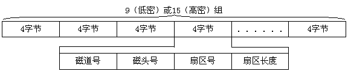

程序所做的工作倒很简单，它会把软盘上1面0磁道第二扇区至第四扇区的内容读人内存，将读取到的数据按每32个字节为一组进行划分，并将每组前11个字节对应的ASCII字符显示出来。建议大家在驱动器中放入一片确实保存有文件的磁盘，这样就会看到有趣的运行结果。是不是觉得这个程序真有些象DIR命令呢？
看来对于一片1.44MB的磁盘来讲，其1面0磁道第二扇区开始保存了这片磁盘的目录表。不同容量的磁盘其目录表的起始位置以及所占的扇区数也不相同，但是目录表都具有相同的组织形式。请注意上面这个程序，它将磁盘的目录表按每32个字节为一组进行划分，为什么要这样做呢？我们知道每个文件都有一组表明自身特征的数据，比如文件长度、属性、建立的日期等等。这些数据和文件名、扩展名一起组成了完整的目录项，DOS为每个目录项分配了32个字节，关于这些字节的具体分配在此不作说明，大家可以参考其它书籍。
保留扇区内除了引导程序和目录表之外还有几个扇区，在这些扇区中DOS存储了一张"文件分配表"，一般称其为FAT（File Allocation Table）。这张表也是十分的重要，其结构也十分特殊，在此笔者不做更深入的分析。
在本章的最后，我们来共同研究一下关于磁盘格式化的知识。BIOS 13H中断为我们提供了一个格式化磁道的功能，这项功能的一个显著特点就是需要我们提供一组数据来描述磁盘扇区。这组数据的基本结构如下：

其中"扇区长度"这个字节是用00-04分别表示128、256、512、1024字节。如果我们现在准备格式化一片1.44MB磁盘的0面第一磁道，那么程序中应给出这样一组数据：
DATA SEGMENT
SEC_DATA DB 1,0,1,2 ；第1扇区信息
DB 1,0,2,2 ；第2扇区信息
DB 1,0,3,2 ；第3扇区信息
．．．． ．．．． ；顺次排列各扇区信息，注意扇区号的递增
DB 1,0,15,2 ；最后一个扇区
DATA ENDS
相应的代码段如下：
CODE SEGMENT
MAIN PROC FAR
MOV AX，DATA
MOV ES，AX ；设置ES：BX寄存器指向扇区信息表
MOV BX，OFFSET SEC_DATA
MOV AH，05H
MOV AL，15 ；选择13H中断的"格式化磁道"功能
MOV CH，1 ；格式化15个扇区
MOV DH，0 ；格式化第1条磁道
MOV DL，0 ；选择0磁头
INT 13H ；格式化A驱
JC ERROR ；执行
．．．． ．． ；出错转ERROR
MAIN ENDP ；请大家自行完成以下部分
CODE ENDS
END MAIN
这样一个程序执行起来意思不大，我们现在把那个数据表做些修改，将最后一个扇区的长度改为1024B，即把最后一个字节改为03H，然后再运行这个程序，这样就可以在这片磁盘上做出一条特殊的磁道。大家可以试着用DISKCOPY拷贝这片磁盘，看看能不能顺利完成。很多加密软件就是通过对磁盘进行"非常规"格式化来获得防拷贝能力的，笔者在此只是给大家开一个头儿，激发一下学习热情而已，更深入的知识还要靠各位自己去钻研。
至于磁盘校验功能大家不必深入掌握，因为最好的校验方法末过于将所有的扇区都读一遍，能正确读出当然就能说明磁盘无损坏。
在这一章中，我们不仅讨论了文件的存取，还讨论了有关磁盘的细节问题。在即将开始的新的一章里，我们将对PC系统的图形功能做一番深入探讨。与本章的内容相比，那是一个多彩的世界。